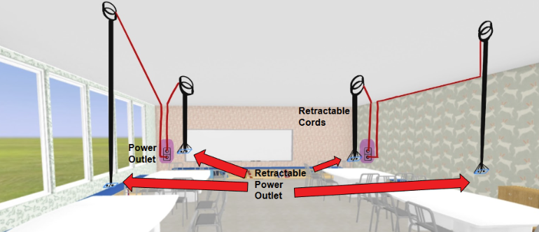
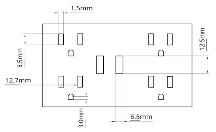

Integrated
Charging Desk

Integrated Charging Desk Design
The Challenge
In many elementary classrooms, including our client’s, limited access to power outlets create areas where students crowd around outlets, leading to safety hazards, inefficient work times and reduced mobility. As part of Engineering Strategies & Practices II, my team and I addressed this safety concern by adding power stations to students’ desks, allowing for accessible and available outlets for use.

Candidate Design: Retractable Ceiling Outlets
Outlet Specifications
- • Dual charging modules providing 4 wall outlets and 2 USB-A ports per desk.
- • Tamper-resistant outlets cover designed for safety standards.

Charging Station Design
Project Leadership
Project Management
As Team Leader, I facilitated weekly team meetings to assign tasks through a Gantt Chart and update the project timeline using Microsoft Project, ensuring all milestones were delivered on schedule.
Technical Coordination
Managed technical documentation through a structured iterative process, engineering design development with the team generating over 75 solutions, and communication our engineering manager and client.